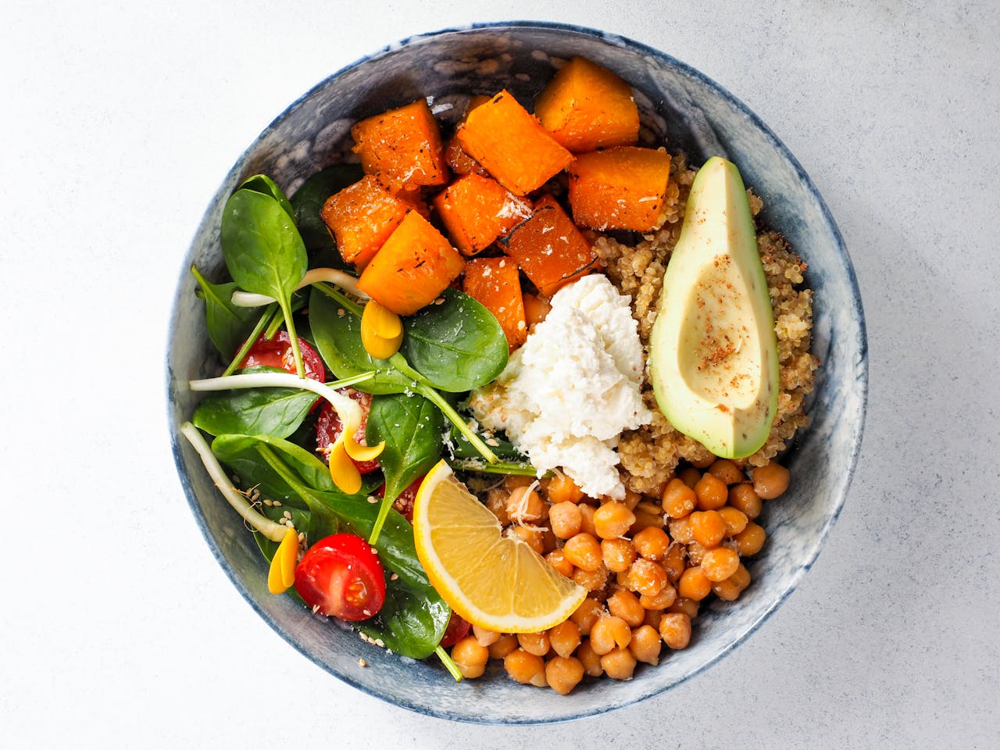

Home
Butternut squash & chickpea tagine

Description
Make this tasty vegetarian tagine that kids will love as much as grown-ups.
Ingredients
1tbsp Oil.
1 Red onion.
2 Garlic cloves.
1tsp Grated ginger.
Ground cumin.
1tsp Ground coriander.
1tsp Cinnamon.
Mild Chilli powder.
450g Butternut squash.
2 Carrots, diced small.
1 Courgette, diced small.
Chopped tomatoes.
Chickpeas, drained.
Cooked couscous/rice, to serve.
Steps
Heat the oil in a heavy-based pan, then slowly cook the onions for around 10 mins until starting to caramelise.
Stir in the garlic, ginger and spices and cook for a further 2 mins.
Add the vegetables and canned tomatoes and bring to a simmer.
Put the lid on and simmer for around 15 mins or until all the veg are tender.
Stir in the chickpeas, heat through and serve with couscous or rice.